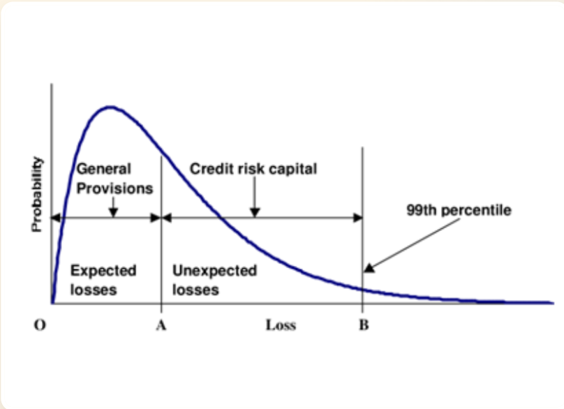
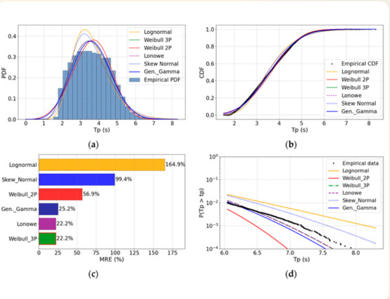
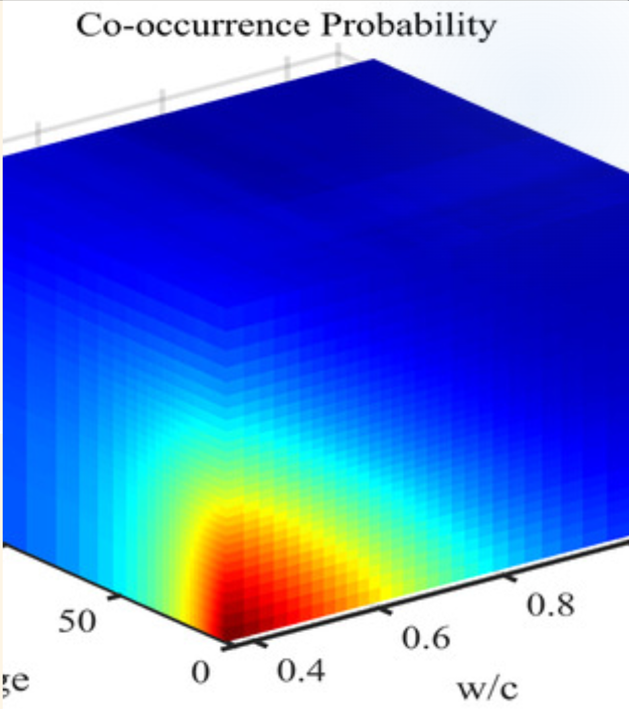

Showcase de Projetos
Pitch Deck Interativo: Use os botoes ou as setas do teclado (← / →) para navegar.
Apresentaçao Executiva
01 / 12Showcase de Projetos
Eneas Junior | Machine Learning Engineer & Data Scientist
Soluçoes escalaveis integrando rigor matematico, engenharia de dados em nuvem e inteligencia de risco para o mercado financeiro.
Foco de Atuaçao
02 / 12Foco: Risco de Crédito
Arquitetura de Dados Sinteticos e Modelagem IFRS9. Mitigaçao da escassez de dados historicos de default atraves de modelagem generativa avançada.
Problema vs Soluçao
03 / 12Motor de Risco IFRS9
O Problema
O treinamento de modelos IFRS9 (PD, LGD, EAD) exige bases massivas, muitas vezes limitadas por Questoes de privacidade (LGPD) ou escassez de dados de default.
A Soluçao
Desenvolvimento de um gerador sintetico utilizando Cópulas Gaussianas e Simulaçao de Monte Carlo para criar perfis com preservaçao de dependência nao-linear.
Fundamento Financeiro
04 / 12Expected Loss (Perda Esperada)
O pilar do risco de credito moderno sob o arcabouço IFRS9. A modelagem atende à equaçao de provisao bancária:

Teoria Estatística
05 / 12Teorema de Sklar
A "chave mestre" que permite separar as distribuiçoes individuais das variaveis da sua estrutura conjunta:

Modelagem de Dependencia
06 / 12Cópulas Gaussianas
Mapeia variaveis uniformes para o espaço normal multivariado, injetando a matriz de correlaçao $R$:

Algoritmo Generativo
07 / 12Processo de Monte Carlo
1. Amostragem
Vetor aleatório independente $\epsilon \sim \mathcal{N}(0, I)$
2. Cholesky
Injeçao de dependência: $Z = L \cdot \epsilon$
3. Inversao
Mapeamento real: $X_i = F_i^{-1}(\Phi(Z_i))$
Métricas de Desempenho
08 / 12Performance do Modelo PD (AUC)
Processamento de Voz & Texto
09 / 12IA Conversacional & Speech-to-Text
Informaçao nao-estruturada transformada em inteligencia operacional.
- Remoçao de ruído via Deep Learning
- Extraçao de entidades (NER) e intençoes
- LLMs (Gemini/GPT) para sumarizaçao
Presença de Mercado
10 / 12Experiência & Marcas
Setor Bancário
Banco Mercantil do Brasil
Modelagem de Risco e IFRS9
Inovaçao & IA
YH Brasil, MedRoom, Mutant
Speech-to-Text & Arquitetura
Consultoria
Avenue Code, Myra
Pipelines em Nuvem & GenAI
Infraestrutura
11 / 12Arquitetura Cloud ML
Escalabilidade nativa no Google Cloud Platform (GCP) e AWS. Implementaçao de esteiras de CI/CD para modelos via Cloud Run, processamento distribuido (PySpark) e orquestraçao via Kubernetes.